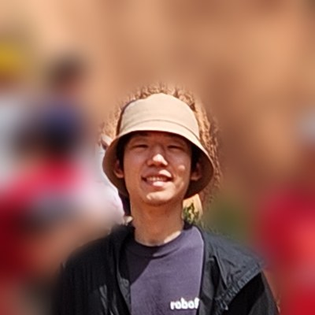

CVPR 2026 Workshop: Open-World Vision
Kyeongryeol Go (Andre)
Machine Learning Engineer at Superb AI · Seoul, South Korea
I lead the vision foundation model task force at Superb AI, where I develop ZERO, an industry-ready model for open-set visual grounding, and the data engines around it. I received both my B.S. and M.S. from KAIST.
I care about research that holds up in the real world, and I like carrying a hard problem all the way from an idea to a model that customers deploy. I enjoy working in collaborative teams, and I believe we grow together through persistence: sharing what we learn and staying with a problem until it is truly solved.
Vision Foundation Models
Data-centric AI
Uncertainty Quantification

Awards
CVPR 2025 Workshop: Visual Perception via Learning in an Open World
ICRA 2025 Workshop: Thermal Infrared in Robotics
KAIST 2018 ISysE Research Day
Papers
* denotes equal contribution
NeurIPS 2026 W
Agentic Search for Deployment-Specific Configuration of Promptable Detectors
Solution Report
Discover the Unknown and Reconsider the Known: Specializing Multimodal Promptable Detectors for Diverse Domains
CVPR 2026 W
Towards Continual Expansion of Data Coverage: Automatic Text-guided Edge-case Synthesis
arXiv 2025
ZERO: Industry-ready Vision Foundation Model with Multi-modal Prompts
arXiv 2025
Edge-case Synthesis for Fisheye Object Detection: A Data-centric Perspective
NeurIPS 2023 W
Transferable Candidate Proposal with Bounded Uncertainty
IEEE Access
Meta-Learning amidst Heterogeneity and Ambiguity
ICLR 2022
Neural Processes with Stochastic Attention: Paying more attention to the context dataset
Experience
Machine Learning Engineer · Superb AI (YC W19)
Oct 2022 – Present
- Lead the vision foundation model task force across R&D, productization, and technical sales
- Develop ZERO, an industry-ready vision foundation model tailored for open-set visual grounding
- Build a self-evolving agent for ZERO that autonomously discovers optimal adaptation settings
- Integrate a training-free, negative-prompt-aware logit adjustment method into ZERO for user interaction
- Engineer a scalable multi-node auto-labeling pipeline for large-scale foundation model training
- Develop a data-centric edge-case synthetic image generation pipeline using an instruction-tuned LLM
- Establish a hard-data mining framework transferable across diverse training configurations
- Architect a modular suite of fine-tuning assistants for object detection, OCR, and image generation
Machine Learning Engineer · Spacewalk
Sep 2021 – Sep 2022
- Developed an offline RL agent for real-world lettuce cultivation that outperformed expert policies
- Developed an online RL agent for building design that maximizes rental profit under legal constraints
- Standardized the common code base to streamline experiments and boost team productivity
Data Analyst Intern · SK Hynix
Jun 2019 – Aug 2019
Feature engineering to improve an anomaly detector in semiconductor manufacturing
Research Intern · KAIST AAI Lab
Dec 2018 – Feb 2019
Research Intern · KAIST DAIM Lab
Jun 2018 – Aug 2018
Projects
VFM-based threat awareness system deployed on a vendor-specific NPU
Jun 2026
Safety-monitoring video analytics for PPE compliance and hazard alerts
Apr 2026
Object detection & OCR training pipeline integrated into an on-premise MLOps platform
Feb 2026
Synthetic image generation for rarely occurring objects in iron scrapyards
Oct 2025
Metal weld anomaly detection with interleaved VLM reasoning
Sep 2025
Mask-conditioned road-scene generation for autonomous driving data
May 2025
Patents
Method for training visual grounding model by using pseudo label of image and learning device using the same
US · JP · KR
Kyeongryeol Go
Method for generating training data to be used for training machine learning model and training data generating device using the same
US · JP · KR
Kyeongryeol Go, Sangbum Choi
Method for training caption rephrasing model to allow edge-case data to be generated and learning device using the same
US · JP · KR
Kyeongryeol Go
Show 5 more
Method for evaluating performance of a second object detection model for edge case data acquired based on prediction results of a first object detection model and computing device using the same
JP · KR
Kyeongryeol Go
Method for training image generation model to allow images to be generated based on prediction uncertainty of identification model and learning device using the same
JP · KR
Kyeongryeol Go
Method for training and testing controllable image generation model capable of reflecting fine-grained instance layout and learning device and testing device using the same
JP · KR
Kyeongryeol Go, Seunghyun Kim
Method for generating image based on instance layout and computing device using the same
JP · KR
Kyeongryeol Go
Method for detecting at least one object in an input image by using an extended cropped image and computing device using the same
KR
Taewoong Jang, Kyeongryeol Go, Sangbum Choi
Talks
ZERO for Self-Evolving Industrial Vision Agents
Aug 2026
AWS Marketplace · Discovering optimal adaptation settings from just 10 images
How ML Engineers Drive Business Impact through R&D
Jan 2026
Superb AI · Three practical case studies bridging research and business
Building an Industry-ready, Multi-domain Vision Foundation Model
Dec 2025
AICA · GPU-driven scaling and performance optimization strategies
Unlocking the Potential of Synthetic Data through Training Curricula
May 2025
ICRA 2025 · 1st place solution of the infrared instance segmentation challenge
An Overview of Reinforcement Learning
Feb 2024
AI Robotics KR · From classical RL to multi-agent systems
Education
M.S. in Artificial Intelligence · KAIST
Sep 2019 – Aug 2021
Advised by Prof. Seyoung Yun, OSI Lab
- Full Academic Scholarship (KAIST)
- Industry-Academia Scholarship (SK Hynix)
B.S. in Industrial and Systems Engineering · KAIST
Mar 2015 – Aug 2019
Minor in Economics
- Full Academic Scholarship (KAIST)
- Honor Student Scholarship (KAIST)
- Song Hyun Scholarship (KAIST ISysE)
Leadership
President, Industrial and Systems Engineering Department · KAIST
Jan 2017 – Dec 2017
Lead, Overseas Volunteer Group Education Team · COPION
Dec 2016 – Feb 2017
Organizer · TEDxKAIST
Mar 2015 – Dec 2016